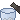
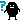
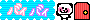

| 2011/11 29 Tue | ヽ(・∀・) ノ |
遅れましたが…
名古屋！
名古屋ではね!!
イベントの前日に手羽先食べました！
言ってなかったけど
いこまちゃん
初
 名古屋
だったのよ〜んで初手羽先のお味は…
名古屋
だったのよ〜んで初手羽先のお味は…
名古屋
だったのよ〜んで初手羽先のお味は…
おいしかった〓(o>ω<o)
さらさらいけました〓
手羽先のおいしい食べ方を教えてもらってもっとおいしくいただきました〜!
手羽先を食べた後に飲むコーラ

は最高ね〓
そしてイベント当日!!
マンモスフリーマーケットにお邪魔させていただきました〜
大阪と東京など他の県から来てくれたみなさんありがとうございます!!
わざわざすいませんね〓
でもとても嬉しかった〓〓
イベントではポンコツを沢山だしてしまってごめんなさい〓
真面目ないこまちゃんも見てほしかったのにポンコツが勝ってしまいました…
次行くときは完璧に
真面目にポンコツに出来るように頑張ります〓
ティッシュ配りました〓
いこまちゃんティッシュ持ってる人はどれくらいいるんだろう〜

あっ…
いこまは推しじゃないからいらないっ!!
ぽいっ!は
ティッシュに申し訳ないので、ティッシュは使ってくださいませ(笑)
あと乃木坂４６を初めて知ったみなさん!!
乃木坂４６でググって下さいませ〓(笑)
さぁ!!ググるしか〜
いこまちゃんの自己紹介ものっけます〓
出身：秋田県
名前：生駒里奈
性別：おんなのこ
好きな食べ物
白米、漬物、煮物。
秋田県出身の
自称アイドル界初
 の
の
の
ポンコツアイドルヽ(・∀・)ノ生駒里奈です!!
がっこ(漬物)が大好きです( 〃▽〃)
ポンコツだけと頑張ります〓
よろしくね〓
今回のイベントで沢山の事を学び、感じました〓
またみなさんに会う日までレベルアップして、もっと乃木坂４６を好きになって頂けるように頑張ります〓
本当にありがとうございました(o>ω<o)
では！
30日にZepp東京で会いましょう〓〓

コメント(61)
2011/11/29 00:12